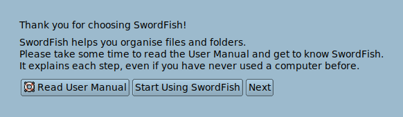
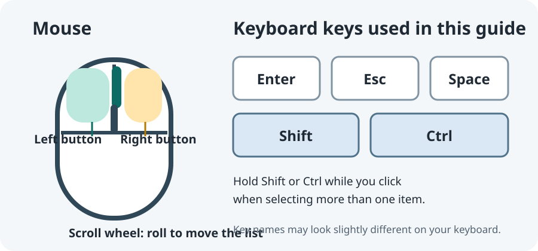
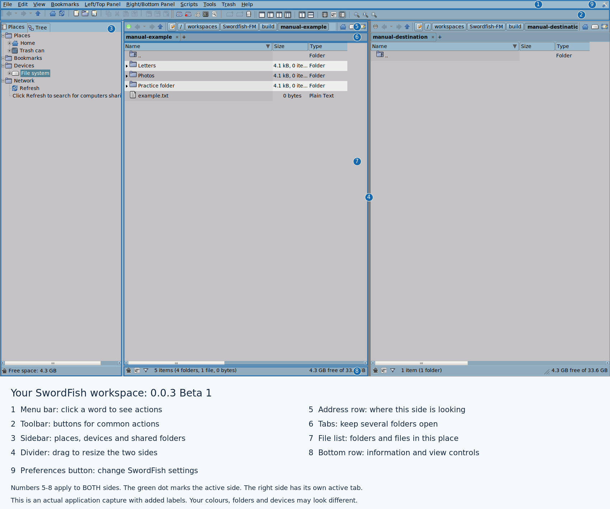
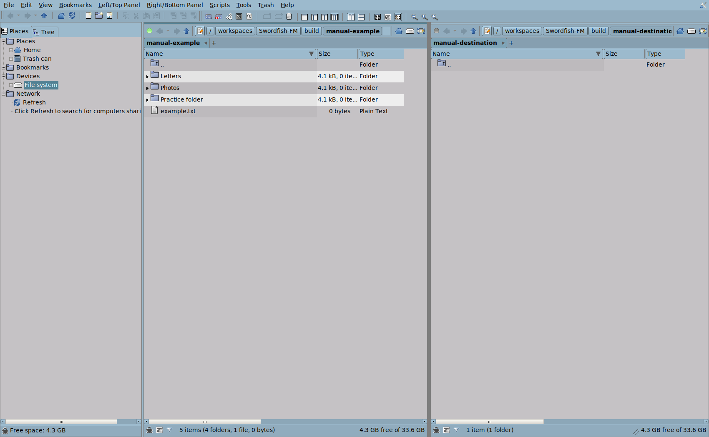
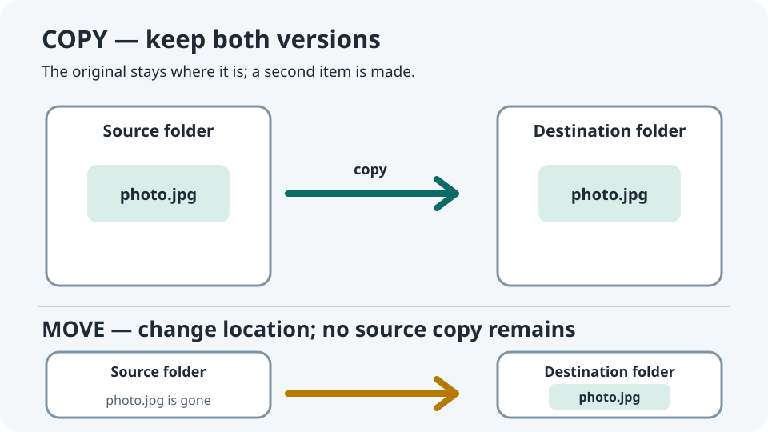
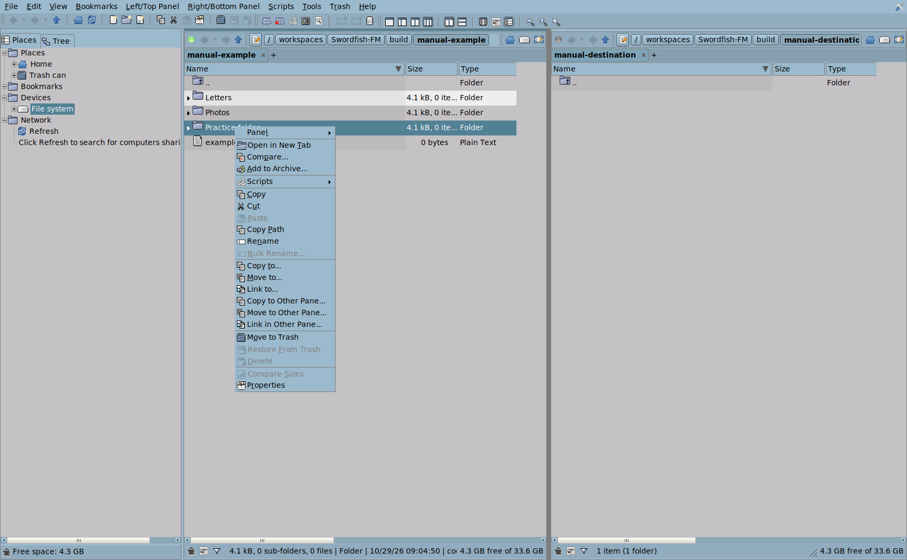
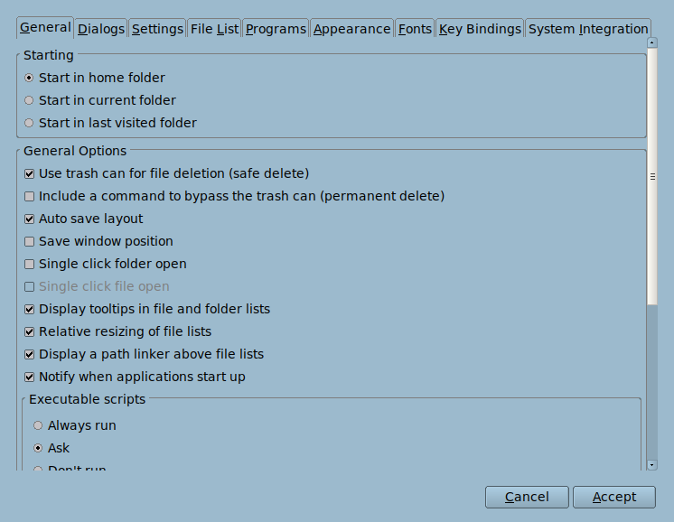

1. Before you begin
Swordfish FM is a file manager: it gives you a visual way to browse folders, open files, and organize the information stored on your computer or on connected devices. It does not replace your operating system, and it does not automatically make a backup.
Think of a computer as a large filing cabinet. A file is like one paper document, photograph, or song stored in that cabinet. A folder is like a labelled paper folder that can hold many files and smaller folders. Swordfish shows these as names and icons on the screen. An item is a general word meaning either one file or one folder.
Your personal files are usually inside your home folder, a private starting area for your computer account. It may be named after you or shown with a home-shaped icon. A desktop is the background and panels you see after signing in; an application is a program, such as Swordfish or a web browser.
These instructions use three labels:
- Result: what you should see after the single action in that step.
- Recover: a safe way to return or try again if the result differs.
- Warning: a risk worth understanding before continuing.
Take extra care with permanent deletion, removable drives, and any prompt asking to replace files. If you are unsure, choose Cancel and ask the person who manages your computer.
First-run welcome: on a fresh setup, Swordfish introduces itself. Choose Read User Manual to open this guide, Next to continue through the welcome, or Start Using SwordFish to finish. The next welcome page offers Customize… to open Preferences and System Integration… to open the System Integration tab directly. These are optional routes into Preferences; integration choices remain off unless you select them.

Harmless practice: read the names of the buttons and panels before clicking anything. Looking at a file does not change it.
2. Mouse and keyboard
The pointer is the arrow that moves when you move the mouse or trackpad. Move the pointer onto a button or item before clicking it. The mouse button is the physical button you press; “click” means press and release it once.

- Left-click: press and release the left button once. This usually selects a file, folder, menu, or button.
- Double-click: click the left button twice quickly on the same item. It usually opens a folder or file. If it only highlights, pause briefly and try two quicker clicks; a desktop setting can instead make one click open.
- Right-click: press and release the right button once. A small context menu usually appears with actions for the item under the pointer. Choose one menu line with a left-click.
- Scroll: roll the wheel away from you to move down, and toward you to move up. On a touchpad, use its normal two-finger scroll gesture.
- Drag: hold the left button down while moving the pointer, then release. Dragging can move files; beginners should not drag files until they understand which pane or folder is the destination.
A keyboard has letter and number keys, a long Space bar, and special keys. Enter often confirms a dialog or opens a selected item. Esc often closes a menu or cancels a dialog. Shift and Ctrl (Control) are usually held down while pressing another key or clicking; they are not typed as letters. A blinking vertical line in a text box is the text cursor, showing where typed characters will appear.
When an instruction says “choose ,” click in the top menu, then click . The arrow means “then”; it is not a special key. A keyboard shortcut is a combination of keys that performs a command. Shortcuts are optional; use the named menu command if you prefer.
- Move the pointer over an item without clicking.
- Click a blank area of the file list.
- Scroll down a little.
- Scroll back to the starting position.
3. Files and folders
A file is one piece of stored information: for example, a letter you wrote, a picture, or a song. A folder is a container that groups related files—like a paper folder labelled “Recipes” holding recipe pages. A folder can also contain another folder. You can open a folder to look inside it; that does not alter its contents.
Every item has a name. A file name may include an extension, a short ending after a dot that gives a clue about its type: letter.txt often means a plain text letter, while photo.jpg often means a picture. The extension is only a clue, not a guarantee, and changing the ending does not change the file's contents. A folder name usually has no extension.
A path is the item's address, much like a postal address tells you which building and room to look in. For example, /home/ava/Documents/letter.txt means: start at the computer's top-level location /, go into home, then ava, then Documents, and find letter.txt. The slash character / separates folder names. In Swordfish, a breadcrumb path shows each folder as a clickable segment; it is not always an editable text box.
Names beginning with a dot, such as .settings, are commonly hidden settings files and folders in Linux. They are still present even when not shown.
Warning: don't edit or remove unfamiliar hidden files or folders. Programs and the desktop may need them to remember settings or start correctly.
- Look at the names and icons in your home folder.
- Point to one item that you recognize as a folder.
- Point to one item that you recognize as a file.
4. Starting and closing Swordfish
Swordfish is available as an installed application or as a portable folder. Both open the same kind of file manager window; the portable edition runs from its own folder and is not installed system-wide.
Starting an installed copy
- Open the desktop's applications menu. This is usually a button labelled Applications or a grid of dots/squares.Result: a list of programs appears.Recover: close the menu and ask the person who installed Swordfish if you cannot find the applications menu.
- Find and click Swordfish in that list.Result: the main file manager window appears.Recover: if no Swordfish entry appears, check whether it was installed or ask your administrator for the correct launch method.
Starting a portable copy
A portable download normally arrives as an archive—a package of files compressed into one download. The release page provides a ZIP package; some systems or distributors may instead provide a .tar.gz archive. You need to extract the archive before you can start the app. “Extract” means unpack the enclosed files into a regular folder.
If you do not already have the portable package, use these download steps first:
- Open your web browser, such as Firefox or another browser you already use.Result: a browser window appears.Recover: ask your administrator for the release package if you do not have internet access.
- Open the Swordfish FM release page.Result: the page lists Swordfish releases.Recover: check that the web address is exactly the link in this manual before downloading.
- Find the release's portable archive asset (not an asset marked source code).Result: you have identified a ready-to-run portable package, usually a ZIP or tar.gz file.Recover: if the asset names are unclear, ask the person who shared this manual.
- Click the portable archive's download link once.Result: the browser begins downloading the archive.Recover: do not open or run the archive directly from an untrusted source.
- Wait until the browser reports that the download is complete.Result: the archive is available in the browser's Downloads list or your Downloads folder.Recover: if the download failed, read the browser's message or ask for help.
- Open your desktop's file-browsing application, often shown with a folder icon.Result: a window showing folders and files appears.Recover: if you do not know which application opens the file browser, ask for help; do not enter commands in a terminal.
- Open the Downloads folder in the file browser.Result: the folder shows files downloaded to your account.Recover: if the archive is not here, look in the browser's Downloads list or ask the person who provided the file.
- Find the Swordfish portable archive in the Downloads folder.Result: you can see a package name ending in
.zipor.tar.gz.Recover: if the downloaded file has a different name, verify that it came from the release page or from your administrator. - Right-click the Swordfish archive and look for an option such as Extract Here, Extract To…, or Extract Archive.Result: a context menu or archive window shows extraction choices.Recover: if no extraction choice appears, use the desktop's archive/Archive Manager application or ask your system administrator which built-in tool to use.
- Choose an extraction option that creates a new Swordfish folder in Downloads or another folder you own.Result: an extracted folder appears and contains the portable app files.Recover: if you cannot tell where the files went, check the archive manager's extraction location and do not extract over an unrelated folder.
- Double-click the newly extracted Swordfish folder.Result: you can see the files and folders that make up the portable application.Recover: if you see only another archive, open the folder created by extraction or repeat extraction into a new folder.
- Find the file named
AppRunin that extracted folder and double-click it only if the package came from a source you trust.Result: Swordfish starts if your desktop permits the file to run.Recover: if the desktop asks whether to Run or Display the file, choose Run only for this verified Swordfish package. If it says the file is not executable, stop and see the permission note below; do not apply that permission change to other files.
Desktop archive tools have different names and button wording. A .tar.gz filename means one archive has been compressed; some desktop tools unpack both layers at once, while others leave a second .tar archive for you to unpack. Keep all extracted Swordfish files together and do not move AppRun by itself.
- If extracting a
.tar.gzproduced a second.tarfile, right-click that new.tarfile.Result: its context menu appears.Recover: if the first extraction already produced the Swordfish folder, do not extract anything else. - Choose the desktop archive tool's extraction option for the
.tarfile.Result: the remaining layer is unpacked, usually into a Swordfish folder.Recover: if you do not see an extraction choice, ask your administrator which built-in archive tool to use.
If AppRun is not executable: only change permissions after verifying that this is the trusted Swordfish package you meant to download. A permission allows the operating system to start a file as a program.
- In the extracted Swordfish folder, right-click the file named
AppRun.Result: its context menu appears.Recover: do not change permissions on any file unless you have verified its source. - Choose Properties from that context menu.Result: a properties window opens for AppRun.Recover: close it without changes if it is not the AppRun file inside the extracted Swordfish folder.
- Open the Properties window's Permissions page or section, if present.Result: file permission controls become visible.Recover: if the window has no Permissions section, stop and ask your administrator.
- Look for a checkbox such as Allow executing file as program.Result: you can tell whether this AppRun file is allowed to start.Recover: if the label or file identity is unclear, do not change anything.
- Enable that checkbox only for this trusted AppRun file, if it is currently unchecked.Result: the permission control shows that AppRun may run.Recover: if the desktop asks about another file or a whole folder, cancel.
- Close the Properties window using its normal close button.Result: you return to the extracted Swordfish folder.Recover: if you cannot tell whether the setting was applied, ask your administrator instead of changing other permissions.
- Double-click
AppRunin the extracted Swordfish folder.Result: Swordfish opens if the trusted file is now permitted to run.Recover: if it still does not start, leave permissions as they are and ask your administrator.
In Preferences, optional System Integration can add a desktop launcher, an applications-menu entry, or a command link. All choices start unchecked. Desktop and menu shortcuts are personal. A command link can be personal or shared, depending on the location you choose. Portable shortcuts point to the folder's current AppRun. Moving that folder later breaks the shortcuts.
Closing
- Choose or click the window's close button.Result: the Swordfish window closes; ordinary files and folders are unchanged.Recover: start Swordfish again using the same installed or portable method.
Closing Swordfish is not the same as ejecting a USB device. Finish the device steps in chapter 16 before unplugging a drive.
5. Your workspace
The illustration names the main areas you will use. The precise arrangement can differ if you choose a one-panel layout, hide a side panel, or resize the window. Screenshot examples use Swordfish's bundled default theme; fonts, colours, and overall system appearance can differ on your computer.


- Menu bar: named menus for file actions, editing, views, bookmarks, tools, trash, and help.
- Toolbar: buttons for common actions; some device controls depend on what is selected.
- Address bar: the current folder's path for that pane.
- Sidebar: places, folders, devices, and sometimes network locations.
- File list: files and folders in the current location.
- Tabs: saved browsing locations within each pane.
- Status area: context such as item counts or selection information.
A selected item is highlighted. The active pane is the pane with keyboard focus; its active tab is the location a command will usually use. A destination dialog or explicit “Other Pane” command may use a different place.
Harmless practice: find the address breadcrumb in the screenshot, then find the corresponding address area in your Swordfish window. Do not click a file action.
7. Selecting items
To select an item means to highlight it so Swordfish knows which item a command should affect. Click one file or folder once; it is selected but not opened. To select several separate items, hold Ctrl (Control) down while clicking each item. To select a continuous range, click the first item, hold Shift, then click the last item. Release the key after clicking. The mouse key diagram in chapter 2 shows these keys.
Select All selects every item in the current list, not every item on the computer. Deselect before taking a destructive action if you are uncertain about the selection.
- Click one unimportant item once.Result: the item becomes highlighted but is not opened.Recover: click empty space to clear the selection.
- Click a blank area in the list.Result: the highlight disappears and no item is selected.Recover: click the item again if you meant to select it.
Warning: always read the number and names of selected items before copying, moving, renaming, or deleting them.
- Open your practice folder.
- Click one disposable file once.
- Hold Ctrl and click a second disposable file once.
- Release Ctrl, then click empty space to clear the selection.
8. Safe practice folders
Practice in a folder that belongs to you. Do not use the system folders /, /etc, /usr, /bin, or another person's home folder.
- Click the Go to Home Folder button in the pane where you want the practice folder.Result: the file list shows your home folder.Recover: check the address breadcrumb; if it does not show your home location, do not create the folder yet.
- Choose .Result: a name field or dialog appears for a folder in the current location.Recover: press Esc or click Cancel if the address is not your home folder.
- Type
Swordfish-Practiceinto the folder name field.Result: the requested name appears in the field.Recover: if the name is already present, cancel and choose another distinct practice name. - Confirm the new name using the dialog's confirmation button or Enter.Result: the new practice folder appears in your home folder.Recover: if you see an unexpected replace/overwrite prompt, choose Cancel.
Use this folder for the harmless examples in this manual. If you make a practice file, use a plain text editor and type only a sentence you can discard. You may remove your practice folder later after checking that it contains nothing you need.
Warning: a practice folder is not a backup. Never put the only copy of an important file there for an experiment.
9. Copying files
Copying creates another version and leaves the original in place. If two files have the same name in the destination, Swordfish may ask whether to replace, skip, or rename. Stop and inspect that prompt; replacing can overwrite existing contents.


- Open the folder containing a disposable practice file.Result: the file appears in the list.Recover: check the address breadcrumb to confirm you are in your practice folder.
- Click the practice file once to select it.Result: the filename is highlighted.Recover: if a different item is highlighted, click empty space and select the intended file.
- Choose .Result: a Copy dialog opens with a destination field and a small folder/browse button beside it.Recover: choose Cancel if the selected source is not the file you intended.
- Move the pointer over the small folder/browse button beside the destination field.Result: its tooltip appears and says Select Destination….Recover: if the tooltip does not match, do not click; choose Cancel instead.
- Click the folder/browse button beside the destination field.Result: a file-and-folder chooser opens.Recover: close the chooser if you do not recognize its current location.
- Navigate in the chooser to the practice folder where you want the copy to go.Result: the destination folder is visible.Recover: do not choose a folder outside the practice area.
- Select the destination folder in the chooser.Result: the folder becomes selected.Recover: select a different practice folder if the wrong one is highlighted.
- Confirm that folder in the chooser using its selection/accept button.Result: the Copy dialog's destination field now shows the selected path.Recover: if the path is unfamiliar, choose Cancel in the Copy dialog.
- Check that the destination field contains the practice folder's path.Result: you have verified where the copy will go.Recover: do not continue if the destination path is not clear.
- Click Accept in the Copy dialog.Result: a copy appears in the destination; the source remains where it was.Recover: if the copy went somewhere unexpected, search for its name and ask for help before removing anything.
You can also copy with and , or with the shortcuts in chapter 26. The context menu has a grouped set of Copy, Cut, Paste, and Copy Path actions, followed by Copy to…, Move to…, Link to…, and Copy/Move/Link in Other Pane. In a two-pane layout, an Other Pane action targets the opposite pane's active tab. Check both paths before confirming.
Warning: copying onto an existing same-named file is not a harmless practice. Do not approve replacement unless you have checked which copy you want to keep.
Harmless practice: use the numbered copy instructions above with one disposable practice file. Verify that the source remains and one copy appears in the destination.
10. Moving files
Moving changes an item's location. The item is removed from its old folder after it reaches the destination. Moving between folders on the same disk is usually quick; moving between devices can take longer and may behave like copy-then-remove.
- Open the practice folder containing a disposable file.Result: the file appears in the list.Recover: check the address breadcrumb before continuing.
- Click the disposable file once to select it.Result: the filename is highlighted.Recover: click empty space if you selected the wrong file.
- Choose .Result: a Move dialog opens with a destination field and a small folder/browse button beside it.Recover: choose Cancel if the selected item or source path is not correct.
- Move the pointer over the small folder/browse button beside the destination field.Result: its tooltip appears and says Select Destination….Recover: if the tooltip does not match, do not click; choose Cancel instead.
- Click the folder/browse button beside the destination field.Result: a folder chooser opens.Recover: close it if you do not recognize its current location.
- Navigate to a different folder inside your practice area.Result: the intended destination folder is visible.Recover: do not choose a destination outside the practice area.
- Select the destination folder in the chooser.Result: the folder becomes selected.Recover: select another folder if the wrong one is highlighted.
- Confirm that folder in the chooser using its selection/accept button.Result: the Move dialog's destination field shows the selected path.Recover: cancel if the path is unfamiliar.
- Check the destination field to verify the folder path.Result: you have confirmed the intended destination.Recover: do not continue unless you can identify the destination.
- Click Accept in the Move dialog.Result: the file appears in the destination and is no longer listed in the source folder.Recover: search for the filename or inspect the destination path. If you cannot find it, stop and ask for help before repeating the move.
For a move between panes, check the source selection and other pane's address first. Use Move to Other Pane only when that destination is clearly correct. Never disconnect a drive while a move is in progress.
Warning: the word “move” can remove the source after copying. For important files, make a verified backup before moving between disks.
11. Renaming and file extensions
Renaming changes the item's name, not necessarily its contents. A filename extension is often the last part after a dot (for example, .jpg or .txt).
- Click a disposable practice file once to select it.Result: its filename is highlighted.Recover: click empty space if the wrong file is highlighted.
- Choose or the context-menu Rename command.Result: a Rename dialog appears with the current name in a text field.Recover: press Esc or choose Cancel if you selected the wrong file.
- Type a new name, keeping the existing ending after the last dot unchanged.Result: the new name appears in the text field.Recover: before confirming, restore the original ending if you changed it accidentally.
- Choose Accept in the Rename dialog.Result: the same file appears under its new name.Recover: if you changed the extension, rename it back to the original full name if known. Do not guess an extension for an unfamiliar file.
Changing notes.txt to notes.jpg does not turn text into a picture. Some systems hide known extensions; use Properties or the file list's extension/type details if you need to identify a file.
Warning: an application may stop recognizing a file if its extension changes. Preserve the existing extension unless you know why it must change.
12. Trash, restore, and permanent deletion
Move to Trash is the reversible choice for ordinary local files. It places an item in the Trash rather than immediately destroying it. Restore from Trash returns it to its original location when possible. A device or filesystem may not support Trash; in that case, the application may warn you or deletion may not be recoverable.
- Open your practice folder.Result: its contents appear in the file list.Recover: check the breadcrumb before continuing.
- Click one disposable practice file once.Result: that filename is highlighted.Recover: click empty space if a different item is selected.
- Choose from File or the item's context menu.Result: the file disappears from its original folder and is placed in Trash.Recover: open Trash, select the item, and choose Restore From Trash.
- Choose .Result: you can see trashed items and their names.Recover: if it is not shown, check whether the item was on a removable or unsupported filesystem.
- Click the trashed practice item once.Result: the item is highlighted in Trash.Recover: do not select an item unless its name is the one you just moved there.
- Choose .Result: Swordfish returns the item to its original location when possible.Recover: if the original location no longer exists, follow the prompt and choose a destination only if you recognize it.
Delete and Empty Trash are permanent-deletion actions. They may not offer recovery. Do not use them to “clean up” files you might need. A backup is the only dependable protection against accidental loss.
High-risk action: never practice with permanent Delete or Empty Trash. Before emptying Trash, review its contents and confirm you have no reason to keep them.
13. Two panes: source and destination
In a two-pane layout, each pane has its own address and tabs. A pane can be positioned side by side or one above the other. The active pane is the one you most recently clicked or focused. A selected item in one pane is the source; the other pane's active tab can be the destination.
- Click an empty area in the left pane's file list.Result: the left pane becomes active; its folder path is shown in that pane's breadcrumb.Recover: if the left pane does not show its active indicator, click inside its file list again.
- Read the folder path shown in the left pane's breadcrumb.Result: you know the left pane's current location.Recover: if the path is unfamiliar, do not start a file operation.
- Click an empty area in the right pane's file list.Result: the right pane becomes active; its folder path is shown in that pane's breadcrumb.Recover: if the right pane does not show its active indicator, click inside its file list again.
- Read the folder path shown in the right pane's breadcrumb.Result: you know the right pane's current location.Recover: if the path is unfamiliar, do not start a file operation.
“Other Pane” means the pane opposite the one containing the selected item. Its actions target the other pane's currently active tab. Verify the destination path before confirming. You can still use the standard Copy to… or Move to… chooser if you prefer to select the destination explicitly.
When there is only one pane, the other-pane actions are unavailable or have no destination. The source pane's selected files are not changed just by switching panes.
Warning: before a cross-pane move, read both paths aloud or carefully compare them. Do not assume left always means source or right always means destination.
- Click inside the left pane.
- Open your practice folder in the left pane.
- Click inside the right pane.
- Open a different practice folder in the right pane.
- Read the left pane's breadcrumb to check the source location.
- Read the right pane's breadcrumb to check the destination location.
- Click one disposable file in the left pane once.
- Right-click the selected file.
- Choose Copy to Other Pane….
- If a Copy dialog appears, check that its destination is the right pane's active tab.
- If the destination is correct and a dialog is open, choose Accept.
- Look in the right pane for the copied file.
14. Tabs
Tabs let one pane remember several folder locations. Each pane has its own tab strip. Selecting a tab changes that pane's location without changing the other pane.
- Choose while the intended pane is active.Result: a new tab appears in that pane and opens its configured starting location.Recover: choose another tab to return to the previous location.
- Click a different tab in the same pane.Result: the pane switches to that tab's folder.Recover: click the first tab again if you switched to the wrong one.
- Choose only when the tab you want to close is active.Result: that tab closes; its files are not deleted.Recover: open a new tab and navigate back to the folder if needed.
Closing a tab is not the same as deleting a folder. Swordfish remembers useful browsing state; if an item is on a removable device that cannot be safely unmounted, the device warning takes priority.
- Click the pane you want to practice with.
- Choose .
- Click the first tab to return to its saved folder.
- Click the second tab to return to its folder.
15. Searching
Search helps locate files by name and, depending on options, file type and other criteria. In the search window, Find files is the name/pattern field, In folder is the starting location, and the optional Text contains field searches inside text files. More options reveals additional filters. “Recursive” means search inside subfolders too; the option Don't search folders recursively switches that behavior off.
- Choose or click the Search Files and Folders toolbar button.Result: a search window opens.Recover: close the search window if it is not what you expected.
- Click the Find files field.Result: a text cursor appears in the field.Recover: click the field again if you do not see the cursor.
- Type a distinctive part of a filename you already know.Result: the search words appear in the field; a partial name is enough.Recover: correct spelling before starting if needed.
- Move the pointer over the small folder/browse button beside In folder.Result: its tooltip identifies it as In folder….Recover: if the tooltip does not match, do not click; ask for help.
- Click the folder/browse button beside In folder.Result: a folder chooser opens.Recover: cancel if you do not know which folder to choose.
- Select a familiar starting folder in the chooser.Result: the folder is selected as the search location.Recover: choose your home folder if you are unsure.
- Confirm the chosen folder in the chooser.Result: its path appears beside In folder.Recover: reopen the chooser if the path is unfamiliar.
- Click Start in the search window.Result: matching results appear when the search completes.Recover: if there are no results, check spelling, location, hidden-file settings, and whether subfolders are included.
- Read the name and path of a result before opening it.Result: you can identify the folder that contains the result.Recover: if you cannot identify it, leave the result unopened and ask for help.
- Double-click only a result whose name and path identify the item you want.Result: the file opens or its location is reached, depending on the action.Recover: close the opened file or return to the search window; avoid edits until you have confirmed it is the right file.
Search results include the containing folder path. Right-clicking a result can offer Open with Default App, Open With…, View, Edit, Rename…, Bulk Rename…, Copy to…, Move to…, Link to…, Move to Trash, Delete, Copy Path, and Properties. The exact commands depend on the result and file type. A result is the real file, not a separate search copy.
A search result is a reference to a file, not a separate copy. Deleting or renaming it changes the actual item. Searching a whole system can take time and may show files you do not have permission to open.
Warning: do not select all search results and delete them. Results may include items outside your personal folders.
16. USB devices, mount, unmount, and eject
Linux must mount a storage device before applications can browse its files. The Devices area shows available and mounted devices. Unmounted entries may appear muted; a readable mounted label distinguishes connected storage that is not currently open from a device that is ready to browse.
Unmount closes the filesystem connection but leaves the drive physically connected and available for mounting again. Eject (Safely Remove) also asks the system to power off a supported removable drive so it can be unplugged safely. Not every device can be ejected through software.
- Insert the USB drive into a USB socket.Result: the desktop may show a notification or add its name to Devices.Recover: wait a few seconds; if it is still missing, check the connection or ask your administrator.
- Wait until the device name appears in Swordfish's Devices area.Result: Swordfish shows an entry for the detected drive.Recover: if the entry never appears, do not unplug another active device; ask for help.
- Click the drive's Mount control or its unmounted Devices entry.Result: the drive mounts and its files become available; a system authorization prompt may appear.Recover: if mounting fails, read the message. Do not run random terminal commands or repeatedly approve prompts.
- Wait for any copy or write activity to finish.Result: no progress dialog or active transfer remains.Recover: if a progress dialog remains, let it finish before continuing.
- Close each file on the drive that you opened in another application.Result: those applications no longer have your open documents from that drive.Recover: save any changes before closing the application.
- If you want to leave the drive connected for later use, choose its Unmount action.Result: the system attempts to disconnect the filesystem.Recover: if unmount fails or reports “busy,” keep the drive plugged in and follow the message below.
- If you chose Unmount, wait for confirmation that it has finished.Result: the filesystem is disconnected but the device remains available for remounting.Recover: if no confirmation appears, check whether the entry is still shown as mounted. Do not unplug it.
- If you want to unplug the drive, choose Eject (Safely Remove) instead of choosing Unmount.Result: Swordfish asks the system to unmount and power off supported removable hardware.Recover: if no eject control is offered, use the desktop's safe-removal control or leave the drive connected.
- If you chose Eject, wait for the desktop or Swordfish to indicate that safe removal is complete.Result: the drive is ready to unplug.Recover: if you do not see a clear completion indication, leave the drive connected.
Busy device: “busy” means something may still be using the drive—perhaps an open file, terminal, music player, or another window browsing it. Close the listed applications and windows, then try Unmount or Eject again. Swordfish does not force-unmount or terminate other applications. Never pull the plug while mounted or while files are being written.
Mount and unmount may require the host's UDisks2 service and udisksctl; your system policy may request administrator authorization. Swordfish should not ask you to type a password into an unfamiliar command window. If unmount fails, leave the device connected. A grey label by itself is not proof that the device is safe to unplug—wait for Eject or your desktop's explicit safe-removal confirmation.
Harmless practice: if you have a spare USB drive and permission to use it, follow the numbered mount and unmount instructions above. Do not practice ejecting a drive that contains unsaved or important work.
17. Opening files and applications
Double-clicking a file usually opens it with the desktop's default application for that file type. A context menu can offer Open with Default App, Open With…, View, Edit, or Run in Terminal when appropriate. Available commands depend on the kind of item and installed applications.
- Click a familiar document or picture once to select it.Result: its name is highlighted.Recover: click empty space if a different item is selected.
- Right-click the selected item.Result: its context menu appears.Recover: click outside the menu to close it if you do not recognize the choices.
- Click Open with Default App in the context menu.Result: the associated application opens the file.Recover: close the application if it is not the one you wanted; use Open With… to choose another installed app.
Opening an executable, script, or unknown download can run code. A document can also contain active content. Do not open files from untrusted sources just because they have a familiar icon or name.
If no suitable app is installed, Swordfish may show an error or offer a chooser. Ask your system administrator about installing software. Swordfish does not silently install missing apps. Portable edition choices may be restricted to applications bundled with it or available on the host.
Warning: use Run only for software you trust and intended to execute. The command Run as Administrator can affect the whole computer; beginners should not use it without explicit guidance.
18. Views, sorting, columns, and previews
Views change how items are displayed; they do not change the files. Icons shows larger icons, Thumbnails shows small previews for supported image types, and Details shows a list with columns such as Name, Size, or Date. Hidden files are a visibility setting, not a separate folder.
- Choose a view from the View menu or a view button.Result: the same folder contents are shown in a different layout.Recover: choose the previous view from the same menu.
- Click a column heading such as Name, Size, or Date once.Result: the list reorders according to that column.Recover: click Name to return to a familiar alphabetical order.
- Click that same column heading again.Result: the sort order may reverse.Recover: click the heading once more or select a different sort column.
- Use the header divider to resize a column, if the current view has columns.Result: text in that column has more or less room.Recover: drag the divider back or choose Autosize where available.
- Turn on hidden files only when you have a reason to inspect them.Result: dot-prefixed items become visible in the list.Recover: turn Hidden Files off again after inspection.
Show or hide a column
- Choose Details so the list has headings above it, such as Name and Size.
- Right-click a heading. A small menu opens with check marks beside the visible columns.
- Click a column's name to show it or hide it. This changes only the display, not your files.
Name always stays visible. Search results also keep Folder Name visible so you can identify where a result belongs. Trash keeps Original Path and Deletion Date in their fixed positions to help with recovery.
Move a column
- Point at the middle of the heading you want to move, not the thin dividing line at its edge.
- Press and hold the left mouse button.
- Move the pointer onto another heading.
- Release the mouse button. The column moves there, keeping its width. Name always stays first.
To undo the move, drag the heading back. Visible columns and their order belong to the pane: every tab in that pane uses the same choices, while the other pane is independent. Each tab still remembers its own column widths.
Choose columns in Preferences
- Open .
- Click the File List tab.
- Choose Left / Top Panel or Right / Bottom Panel from the list above the column choices.
- Check or uncheck the columns you want. To change their order, select a column in the order list and use the up or down button. Name stays first.
- You may select the other panel and choose different columns for it.
- Click OK to apply the choices immediately. No restart is needed for column changes. Cancel discards your changes.
These are the same choices used by the heading menu and heading dragging, not a separate set of defaults. They are remembered when you reopen Swordfish. The panel menu's Name/Size/Type/Extension/Date choices sort the list; they do not show or hide columns. Previews can take time and may not be supported for every format; an empty preview does not mean the file is empty.
Warning: revealing hidden items is safe, but changing or deleting hidden configuration files may disrupt applications or your desktop.
19. Bookmarks
A bookmark saves a convenient path, not a copy of the folder. It lets you return to a location without browsing there each time.
- Navigate to a familiar folder you own.Result: the folder's path appears in the address breadcrumb.Recover: use Home if you are in an unfamiliar location.
- Choose .Result: Swordfish asks for or saves a bookmark for the current tab's location.Recover: cancel if the address shown is not the folder you meant to save.
- Open the Bookmarks menu.Result: saved places and bookmark-management choices appear.Recover: close the menu by clicking outside it.
- Choose the bookmark you just saved.Result: the active pane navigates to the saved location.Recover: use Back or Home if the bookmark points to a location that has moved or is unavailable.
A bookmark to a USB or network location cannot make that device connected. Mount or reconnect it first. Bookmark labels may contain private folder names, so be mindful when sharing screenshots or settings files.
Harmless practice: follow the numbered bookmark instructions above to save and revisit your practice folder.
20. Archives as folders
An archive is a file that packages other files together, often to make them easier to store or download. A ZIP archive may contain many documents and folders. Extract means unpack the enclosed files into a normal folder. Mount as a folder means temporarily show the contents as a browsable location without first extracting everything.
Swordfish's optional “open as folder” feature uses the host program archivemount and working FUSE support. “Host” means the Linux system running Swordfish. FUSE is a system facility that lets a program present archive contents like a folder; Swordfish cannot install or enable it by itself.
- Click a supported archive from a trusted source once.Result: the archive is highlighted.Recover: do not open archives whose source you do not trust.
- Right-click the highlighted archive.Result: the context menu appears.Recover: click outside the menu to close it.
- Choose Open Archive as Folder if that command appears.Result: Swordfish opens the archive's contents as a browsable location when the host tools are available.Recover: close the archive folder and use the ordinary Extract command if browsing as a folder is unavailable.
- If Swordfish reports that
archivemountis missing, read the full message.Result: the message explains the host-tool requirement and offers the installation page.Recover: choose Cancel if you are not sure what to do. - Choose to open the installation page only if you want to read the upstream guidance.Result: after confirmation, your browser may open the archivemount installation page; Swordfish does not download packages or install software for you.Recover: close the browser page and use the archive manager's extraction option instead. Ask your distribution's support channel if you need help installing host software.
To extract without mounting, use the desktop archive manager's ordinary Extract option and choose a new folder you own. The menu names and location chooser differ among desktop systems. A portable Swordfish bundle does not automatically include or install archivemount. Normal extraction does not require archivemount. If Swordfish offers Close Archive Folder (save changes), understand that saving may modify the archive; save deliberately before closing.
Warning: archives can contain unsafe or misleading files. Do not run extracted programs or scripts from an untrusted archive.
21. Remote shares and passwords
A remote share is a folder hosted on another computer or storage device. The Connect to Server workflow may support network protocols such as SMB or SFTP, depending on your desktop's installed services. You need permission from the share's owner and the correct server address.
- Choose .Result: the connection dialog opens.Recover: close it if you did not intend to connect to a server.
- Enter only a server address supplied by its owner or administrator.Result: the address appears in the dialog.Recover: cancel if you do not recognize the server or cannot verify the address.
- Choose the connection type requested by the server owner, if the dialog asks for one.Result: the matching connection fields appear.Recover: ask the owner if you do not know which type to choose.
- Start the connection using the dialog's Connect/Accept button.Result: Swordfish attempts to contact the server or asks for authentication.Recover: cancel if the server identity shown does not match your intended destination.
- Enter credentials only in the trusted desktop or Swordfish authentication prompt for the server you intended to contact.Result: if access is granted, the share appears and can be browsed.Recover: cancel if the prompt is unexpected, the server identity is uncertain, or the password is requested in an unrelated dialog.
Closing a network tab does not necessarily disconnect the share. Use its Unmount/disconnect control when finished. Remounting may request your password again unless your desktop has a reusable credential saved.
Protect passwords: never put a password into a server URL, filename, screenshot, support post, or shell command. Avoid saving credentials on a shared computer. Swordfish does not promise to manage or erase credentials saved by the desktop's keyring.
Only connect to shares you are authorized to use. Do not test random addresses or try to bypass authentication.
22. Bulk rename
Bulk Rename applies a naming pattern to multiple selected files. It can save time, but a mistake can affect every selected name at once.
- Open the practice folder that contains disposable files.Result: the folder's contents appear.Recover: verify the address before continuing.
- Click the first disposable file once.Result: it is highlighted.Recover: click empty space if the item is important.
- Hold Ctrl and click the second disposable file once.Result: both files are highlighted.Recover: click empty space and start over if the selection is not exactly the files you intend to practice with.
- Repeat the Ctrl-click only for a third disposable file if desired.Result: each chosen practice file is highlighted.Recover: do not select a file outside the practice folder.
- Right-click one of the highlighted files.Result: the context menu appears for the selection.Recover: click outside the menu to close it if any important file is selected.
- Choose Bulk Rename… from the context menu.Result: the bulk-rename dialog shows options or a preview for the selected items.Recover: cancel immediately if any selected item is important or outside the practice folder.
- Enter a simple pattern in the rename dialog.Result: the preview updates to show the proposed names.Recover: change the pattern or cancel if the names are duplicated, unclear, or unexpected.
- Read every proposed new name in the preview.Result: you can verify the exact names before applying them.Recover: cancel if you cannot see or understand the full list.
- Confirm only after verifying the preview and selected count.Result: the selected files receive their new names.Recover: if the result is wrong, stop editing and restore names only when the originals are known; ask for help rather than guessing.
Warning: do not bulk-rename your home folder, application files, or a large set of important files as a first experiment. Never confirm without reviewing the full preview.
23. Symbolic links and copies
A symbolic link (symlink) is a pointer to another path. It looks like an item in a folder but usually does not contain a second copy of the target's data. If the target is moved or removed, the link may stop working. A copy is a separate file with its own data.
- Right-click a disposable practice file.Result: its context menu appears.Recover: click outside the menu if the wrong file was selected.
- Choose Symlink to… from the context menu.Result: a destination dialog appears; no link exists until you confirm.Recover: choose Cancel if you meant to make a copy rather than a pointer.
- Move the pointer over the small folder/browse button next to the destination field.Result: its tooltip identifies it as Select Destination….Recover: cancel if the tooltip does not match.
- Click the folder/browse button.Result: a file-and-folder chooser opens.Recover: close it if you do not recognize the current location.
- Navigate the chooser to the
Swordfish-Practicefolder.Result: the practice folder is visible.Recover: do not select a location outside the practice area. - Select the practice folder in the chooser.Result: the practice folder is highlighted.Recover: select the correct folder if a different item is highlighted.
- Confirm the selection in the chooser.Result: the destination dialog shows the selected path.Recover: cancel if the path is unfamiliar.
- Check the destination path in the dialog.Result: you have verified where the link will be created.Recover: do not continue if you cannot identify the destination.
- Choose Accept in the destination dialog.Result: a link appears in the chosen location and refers to the original target.Recover: if you no longer want the link, move the link itself to Trash; do not delete the target by following it.
Some operations or systems follow links differently. Inspect the item type or Properties before removing anything that looks like a link. Use a copy when you need an independent second version.
Warning: deleting a symlink and deleting its target are different operations. Be sure you have selected the link itself before removing it.
24. Preferences
Preferences are settings that change how Swordfish looks or behaves for your account. The Preferences button at the far right of the menu bar opens Preferences. Pause the pointer over it to see the Preferences tooltip. You can also choose .

The dialog includes General, Dialogs, Settings, File List, Programs, Appearance, Fonts, Key Bindings, System Integration, and Custom Actions. A tab is a labelled page; click its label to see those settings.
- Click the Preferences button at the far right of the menu bar, or choose .Result: the Preferences dialog opens with selectable category tabs.Recover: choose Cancel to close without accepting changes.
- Click a category tab whose name matches the setting you want to inspect.Result: that category's controls appear; you can review values without changing them.Recover: return to the previous category if you opened the wrong one.
- Change one setting only if you understand what it controls.Result: the new value appears in the control but has not yet been accepted.Recover: choose Cancel if you are unsure; the pending change is discarded.
- Choose Accept to save the settings you changed.Result: Swordfish saves and applies accepted settings; a restart may be needed for some changes.Recover: reopen Preferences and restore the previous value if needed.
In System Integration, the choices are Create a desktop shortcut, Add Swordfish to the applications menu, and Create a swordfish command symlink. All three start unchecked. The first two affect only your account. The command link lets you start Swordfish by typing swordfish in a command window. It does not install another copy of the program.
- If you want the command link, check its box.
- Open the Command destination list. It shows full locations that your computer already searches for commands. This search list is called PATH. Swordfish does not change it.
- Choose a location. Prefer one marked as your account and requiring no administrator authorization. If your personal
.local/binfolder is missing, Swordfish offers to create it only when that location is already in PATH. - Click OK. Read the confirmation: it shows exactly where the link will be created or removed.
- If the location is marked shared, remember that other people using the computer can also use this command. A protected location requires permission from the person who administers the computer.
- Continue only if you agree. When permission is needed, the system's authorization window asks for it. Swordfish does not collect your password. Cancelling leaves the protected change unapplied.
Unrelated or installed Swordfish files are never replaced. To remove a link, uncheck its box and confirm; a protected link needs authorization again. Portable launchers point to the current AppRun. Moving the portable folder later breaks its shortcuts; open Preferences from the new location to repair them. If a location or helper cannot be used safely, an error explains the problem and Preferences stays open. Do not expect a general-purpose customization engine: this tab concerns these specific integration options only.
The Key Bindings category lists the available shortcut names and values. Do not assume every preference applies immediately or to every window. If you are uncertain, note the original value before changing it.
- Open Preferences.
- Click the Appearance tab or another tab you want to inspect.
- Choose Cancel without changing a value.
26. Keyboard shortcuts
The shortcuts below are the application's documented default bindings in the source inspected for this manual. They may differ in other builds, languages, or if someone has changed the Key Bindings preferences. The menu may display an assigned shortcut beside its command. If a shortcut does not work, use the menu rather than guessing.
| Action | Default | Notes |
|---|---|---|
| Copy, Cut, Paste | Ctrl+C, Ctrl+X, Ctrl+V | Acts on the current selection or clipboard context. |
| Search | Ctrl+F | Opens the search workflow. |
| Home, parent folder | Ctrl+H, Backspace | Backspace goes up one folder in the file panel. |
| Back, forward | Ctrl+Backspace, Shift+Backspace | Navigation history. |
| Edit current path | Ctrl+L | Turns the breadcrumb into a path text field. |
| Refresh | Ctrl+R | Refreshes the current listing. |
| New tab, new window | Shift+F1, F3 | Opens a tab in the current pane or another Swordfish window. |
| New root window | Shift+F3 | Opens an administrator/root window only when supported. Beginners should not use it without guidance. |
| New folder | F7 | Creates a folder in the active location. |
| New file, new symlink | Ctrl+N, Ctrl+J | Opens the relevant creation action. |
| Rename, copy to, move to, symlink to | F2, F5, F6, Ctrl+S | Acts on the current selection; check the selected item before using. |
| Copy Path | Ctrl+Shift+N | Copies the selected item's full path as text. |
| Select all, deselect all, invert selection | Ctrl+A, Ctrl+Z, Ctrl+I | Selection changes only; verify before a file operation. |
| Execute command, terminal | Ctrl+E, Ctrl+T | Command and terminal use requires care; do not run unfamiliar commands. |
| Connect to Server | Shift+F5 | Linux builds; connect only to servers you are authorized to use. |
| Add bookmark | Ctrl+B | Saves the current location. |
| Synchronize panels, switch panels | Ctrl+Y, Ctrl+K | Synchronize changes a pane location to match the other; switch changes which pane is active. |
| Mount, unmount | Ctrl+M, Ctrl+U | Requires an appropriate selected device or mount point. |
| Go to Trash, restore from Trash, empty Trash | Ctrl+F8, Alt+Delete, Ctrl+Delete | Empty Trash is permanent. |
| Hidden files; thumbnails | Ctrl+F6, Ctrl+F7 | Visibility and preview settings. |
| Show one/two panels | Ctrl+F1 through Ctrl+F4 | Different panel and folder-tree layouts. |
| Vertical/horizontal panels | Ctrl+Shift+F1, Ctrl+Shift+F2 | Changes the arrangement of visible panels. |
| Icons, thumbnails, details | F10, F11, F12 | Changes how the active panel lists items. |
| Open, compare, properties | Ctrl+O, F8, F9 | Properties and some actions vary by focused panel. |
| Edit selected item | F4 | Opens the selected file for editing when an editor is available. |
| Move to Trash; permanent Delete | Delete; Shift+Delete | Permanent Delete is high-risk. Prefer Trash. |
| Help | F1 | Opens application help; User Manual is available from the Help menu. |
| Quit | Ctrl+W or Ctrl+Q | Either may close the application depending on focus/context. |
These are defaults, not promises: shortcut settings can be changed, and some work only when a file panel or search results have focus. For example, in the Search window F3 starts a search; in the main window it opens a new window. Click the intended panel first and use its menu or Preferences → Key Bindings to check the current assignment. Do not experiment with Delete shortcuts on important files.
27. Troubleshooting and privacy
A folder or file will not open
Check that the path is correct, the device is mounted, and you have permission to use it. If an error appears, read it fully. Do not change permissions on system folders to force access.
A file seems missing
Check the active pane's address, select the correct tab, look in Trash, and consider whether hidden files are turned off. Search within the likely parent folder. A disconnected device or changed filename can also explain the absence.
A copy or move appears stuck
Wait for the operation to finish. Do not unplug the destination or close the computer. For a network share or USB device, interruption may leave an incomplete copy. Check source and destination after the operation has ended.
A device says “busy”
Close files and windows using it, stop playback or transfers, then retry Unmount or Eject. Keep the device connected if it still fails. Swordfish may list applications and process IDs it could detect, but not every use can be identified; do not terminate a process you do not understand.
A shortcut or menu option is missing
Make sure the correct pane has focus and the item type supports the action. Shortcuts may have been changed in Preferences. Use the menu or ask the person who installed Swordfish.
Privacy when asking for help
A screenshot or diagnostic message may reveal your login name, folder names, device labels, server names, network addresses, or process names. Review it and remove private information before sharing. Never share passwords, authentication tokens, or the contents of private documents. Only send diagnostics to a support person you trust.
Safe rule: when an unexpected prompt appears, cancel it, leave important data unchanged, and ask for help using the exact message with private details removed.
28. Glossary
- Active pane
- The file panel currently receiving keyboard input and ordinary panel commands.
- Archive
- A file that packages one or more files together, often with compression, such as a ZIP archive.
- Bookmark
- A saved location that helps you return to a folder; it is not a copy of that folder.
- Column
- A vertical part of a detailed file list, such as Name, Size, Type, or Date.
- Copy
- Make a separate version while leaving the original in its location.
- Destination
- The place where a copy, move, or link is to be created.
- Extension
- The part of a filename after a dot that commonly indicates a file type, such as
.txt. - File
- A named item that contains data, such as a document, image, or audio recording.
- Folder / directory
- A container that can hold files and other folders.
- FUSE
- A Linux facility that lets a program present a filesystem, such as an archive, as a browsable folder.
- Home folder
- Your personal account's main folder, usually containing Documents, Downloads, Pictures, and personal settings.
- Mount
- Make a device or filesystem available at a location so its contents can be browsed.
- Path
- The address that identifies a file or folder in the filesystem.
- Pane
- One file-browsing area in Swordfish. Two panes can show two locations at once.
- Recursive search
- A search that checks folders inside the starting folder as well as that folder itself.
- Selection
- The highlighted item or items that a file command will act on.
- Source
- The selected item or location an operation starts from.
- Symbolic link / symlink
- A filesystem pointer to another path, rather than a second independent copy of the target's data.
- Tab
- A saved browsing location within one pane.
- Trash
- A holding place for items removed with Move to Trash; recovery depends on filesystem support and the Trash not being emptied.
- Unmount
- Disconnect a mounted filesystem safely while leaving the physical device available for later use.
- Eject
- Safely remove supported hardware, generally by unmounting its filesystems and powering it off.